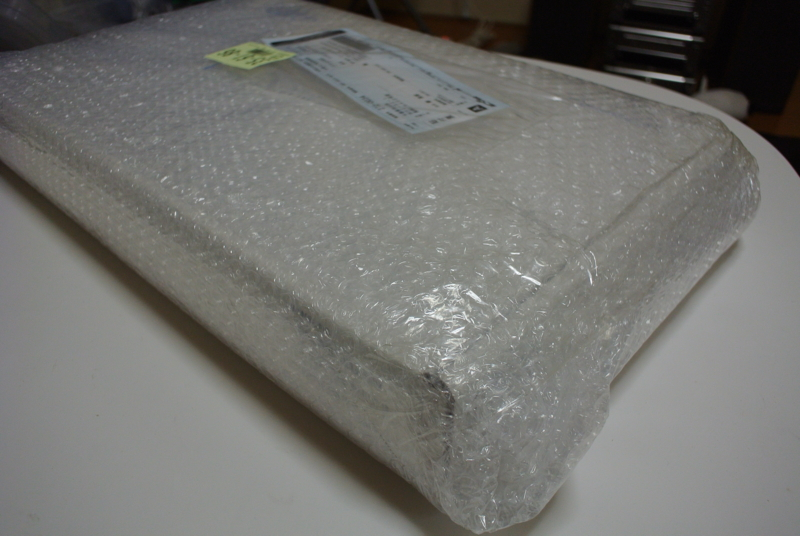
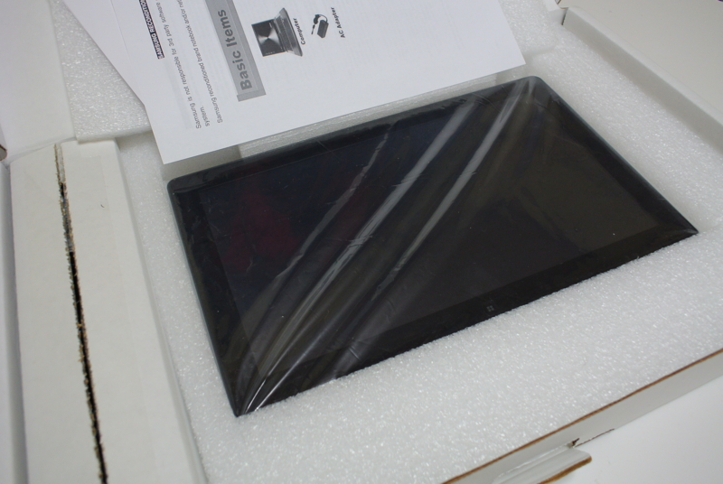
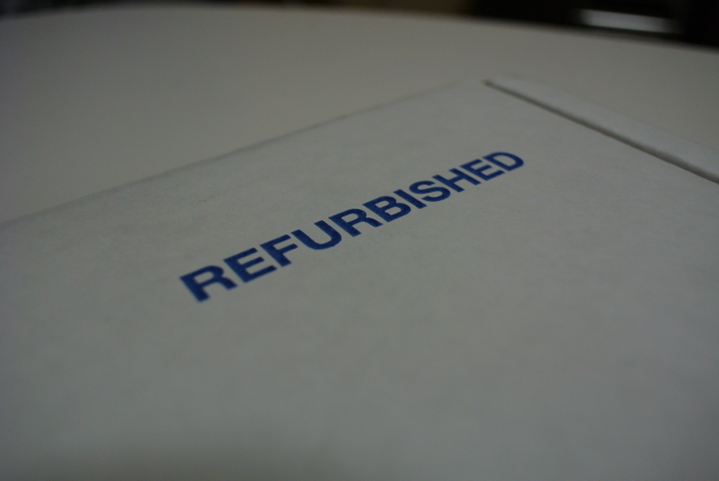
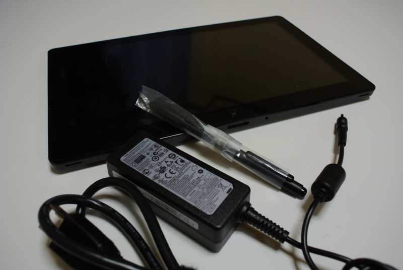
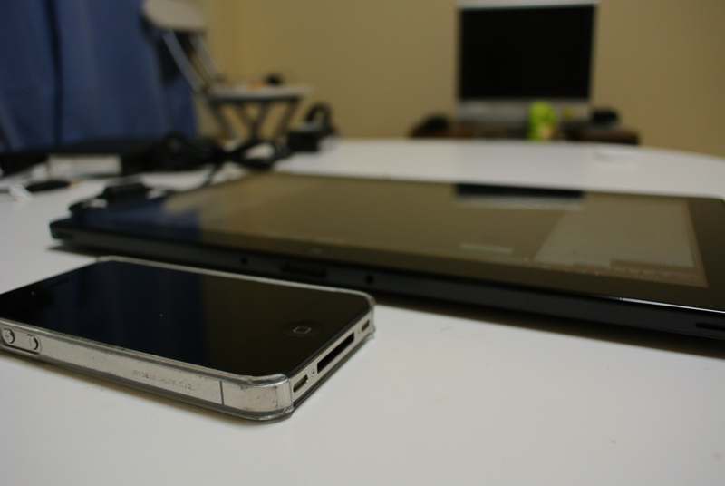
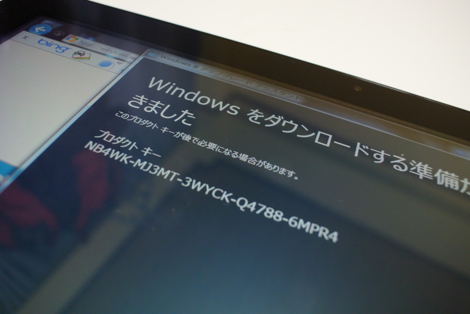

Samsung Series 7 Slate の開封式
公開日：

Windows 8 の事実上のリファレンス機である Samsung Series 7（XE700T1A-A01US）をヤフオクでゲット。お値段は79,800円でした。日本では一般販売されていないので、ほんとは個人輸入だのなんだので面倒なのだけど、そこは「互いが互いに商人」ということで。


ずいぶんお買い得だったけど、それはリファービッシュ品と呼ばれる初期不良の再生品というわけだかららしい。梱包は実にあっさりしたものだ。まぁ、納得して買ったわけだし、動けばまったく問題はない。

付属品はこれだけ。ワコムのタブレット機能が内蔵されていて、専用のペンがついている。これがなかなかよいもので、絵が描けないくせにお絵かきソフトがほしくなってしまった。標準的なスレートPCだと思っていたけれど、ここは野心的なところ。
ちなみに、おもなスペックは以下の通り。
- OS: Windows 7 Home Premium (64-bit)*1
- CPU: Intel Core i5-2467M Processor
- メモリ: 4GB DDR3 1333MHz
- ストレージ: 64GB SSD*2
- ディスプレイ: 11.6-inch (1366 x 768)*3
- グラフィック: Intel HD Graphics 3000
- カメラ: 2MP (front) and 3MP
- バッテリー: 7 時間
- 無線Lan: 802.11 b/g/n，Bluetooth 3.0
- 重量: 898g
- 外部インターフェース: microSDスロット, microHDMI出力, USB2.0x1, Dockコネクタ, イヤホンジャック
ドックもほしいような、ほしくないような。ヤフオクでは最安8,000円からあるようだ。ちょっと割高な感じなので、iPad用のイーゼル＋Bluetoothキーボード＋電源ケーブルで当分は様子を見てみようと思う

x86/64機としては薄くて軽い。けれど、iPadほどではなく、やっぱりPCといった感じ。少し熱いので夏場のごろ寝利用には少し厳しいかもしれない。

Windows 7 は Windows 8 を入れるために入っているのです！ ここで寝落ちしてしまったらしいので、使ってみた感想はまた気が向いたら書くと思う。